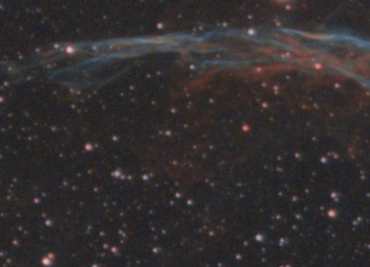
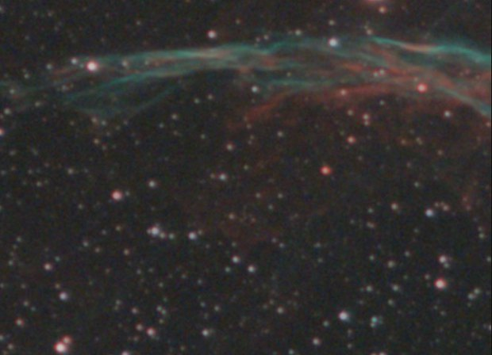

Image étirée
Outil Remove green
Supprime le vert résiduel (SCNR), ou le tourne vers le turquoise.
Comment s'en servir
- Ouvrir Tools et cliquer l'outil : il s'ajoute après l'étape choisie.
- Bouger ses réglages : l'image suit pendant le geste (Live preview).
- Apply garde le résultat. Before / after compare à tout moment.
Réglages
- Amount
- La part du vert au-dessus du niveau neutre qui est retirée.
- Average neutral / Maximum neutral
- Le niveau auquel le vert est ramené : la moyenne du rouge et du bleu, ou le plus grand des deux (plus doux).
- Preserve lightness
- La luminosité perdue avec le vert est rendue.
- Towards teal
- Tourne la teinte des verts vers le cyan : 50 % donne du turquoise. Fait pour les piles bi-bande.
- Mask
- Everywhere, Bright parts (l'objet, pas le fond de ciel) ou Dark parts. Les étoiles n'en font pas partie.
- Threshold
- Où commence le masque, du fond de ciel (0 %) à la partie la plus brillante de l'objet (100 %).
Quand s'en servir
Quand une dominante verte reste sur une image de capteur couleur, le plus souvent après un filtre anti-pollution.
Image
Fait pour une image étirée ; utilisable sur une image linéaire.
Exemple


sansavec Remove green